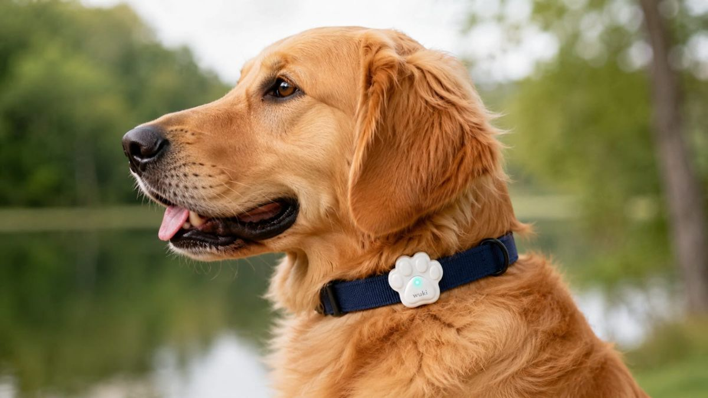
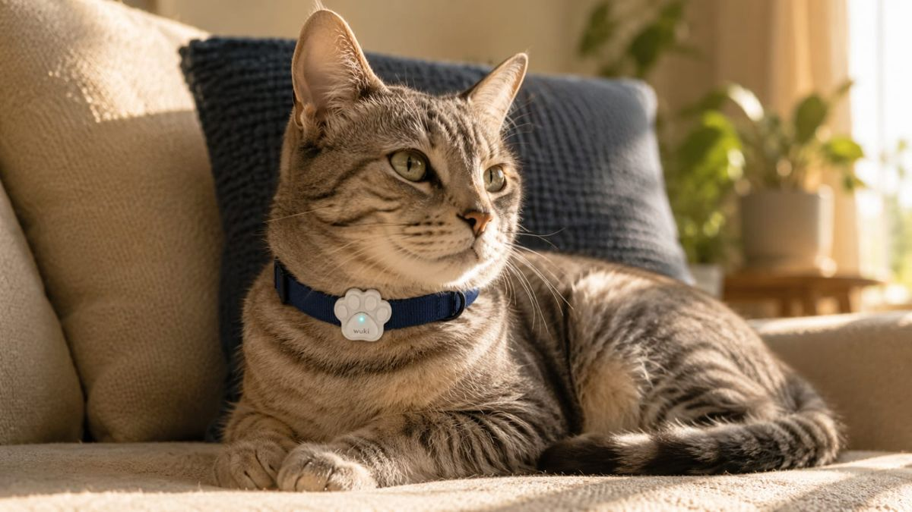
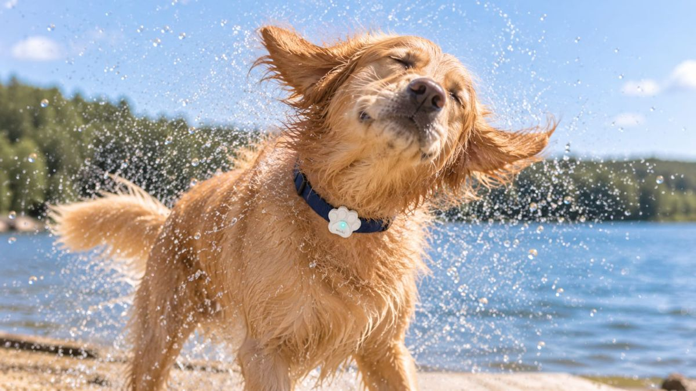
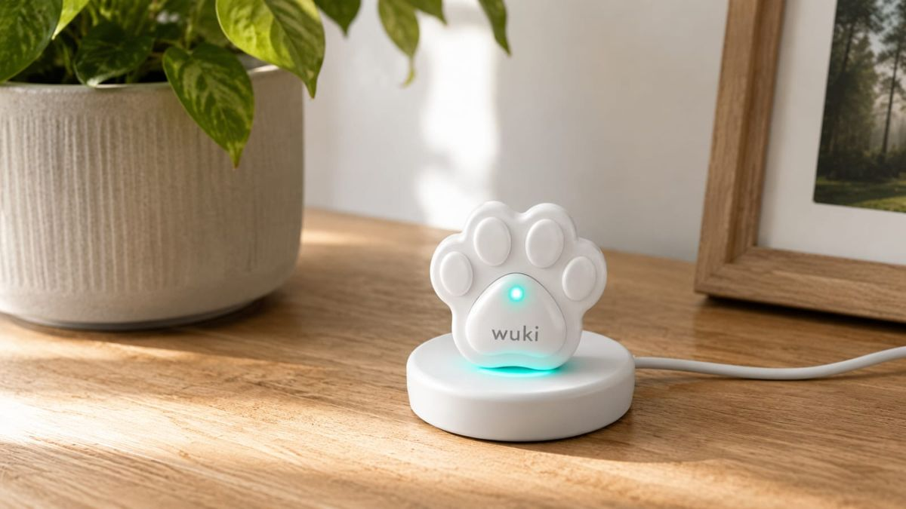
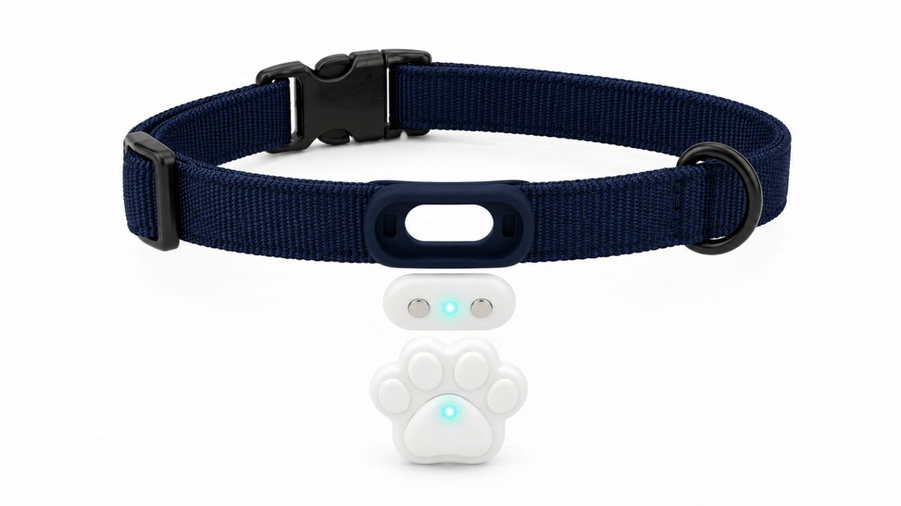

Wuki: el collar que entiende cómo se siente tu mascota
Un collar con sensores para perros y gatos que detecta si tu mascota está ansiosa, con dolor, con hambre o enferma, y te avisa en el celular para que actúes a tiempo.
La historia
Tu mascota no puede decirte que algo le duele
Muchos hogares tienen un perro o un gato, y casi siempre nos enteramos de que algo anda mal cuando ya es evidente: dejó de comer, cojea o lleva días decaído. Los animales esconden el dolor y el estrés, y las señales tempranas pasan desapercibidas.
Wuki nace para leer esas señales. El collar mide el cuerpo y el comportamiento de la mascota todo el día, interpreta qué está sintiendo y te avisa antes de que el problema crezca.




Cómo funciona
Mide
Sensores de pulso, temperatura, respiración y un acelerómetro registran el cuerpo y el movimiento de la mascota.
Interpreta en el collar
Un modelo de Emotion AI corre dentro del collar (Embedded AI) y clasifica el estado: tranquilo, ansioso, con dolor, con hambre o enfermo.
Te avisa
Si detecta algo, envía una alerta al celular con lo que observó y una recomendación, como consultar al veterinario.
Ansiedadpulso alto y jadeo sin ejercicio
Dolorcambios en la marcha y menos actividad
Hambreinquietud en horarios de comida
Enfermedadfiebre o patrones anormales sostenidos
Así llega una alerta a tu celular
La app te dice qué notó el collar, desde cuándo y qué hacer. Los valores son un ejemplo para un perro adulto.
Luna · ahoraPosible ansiedad
Pulso
128 lpm
Temperatura
38,9 °C
Respiración
34 rpm
Pulso alto y jadeo sin actividad física desde hace 12 min. Llévala a un lugar tranquilo.
La tecnología
Dos tecnologías emergentes en un solo collar
Emotion AI
También llamada computación afectiva: sistemas que identifican, interpretan y responden a estados emocionales (Gartner; IEEE P7014; ISO/IEC 30150). Wuki lleva ese principio de las personas a los animales.
En los Hype Cycles de Gartner: Innovation Trigger en 2019; en ventas pasa del pico (2024) al abismo de desilusión (2025) por privacidad, sesgo y regulación.

Embedded AI
Ejecuta los modelos en el mismo dispositivo donde nacen los datos, con TinyML sobre microcontroladores de bajo consumo. Menos latencia, menos datos enviados y más privacidad.
En los Hype Cycles de Gartner: pico de expectativas en 2020; hoy forma parte del Edge AI, un campo inmaduro que avanza rápido (2026).
Qué hace distinto a Wuki
Ya existen collares de monitoreo patentados. Todos miden actividad o signos vitales, pero ninguno clasifica el estado emocional del animal. Ese es el espacio que ocupa Wuki.
Patente
Titular
Qué cubre
Estado emocional
US 9 615 547 B2
PetPace
Acelerómetro y sensores de temperatura, pulso y respiración; alertas ante posible condición médica
No
US 9 807 982 B2
Petrics
Collar que activa módulos (comedero, bebedero, cama) que registran datos de salud
No
US 10 376 020 B1
Mars Inc. / Tractive
Doble retención para fijar un dispositivo removible, como un rastreador
No
—
Wuki
Sensado fisiológico + modelo de Emotion AI dentro del collar + alertas al celular
Sí
Modelo de negocio
Quién lo usa, quién paga y cómo se financia
Usuarios
Dueños de perros y gatos. Muchos hogares tienen al menos una mascota.
Clientes
Los dueños, que compran el collar. Veterinarias y marcas de comida para mascotas, por medio de alianzas.
Ingresos
Venta del collar y una suscripción pequeña (US$ 4/mes) para los informes de salud.
Financiación
Esta preventa financia la fabricación del primer lote. Después, alianzas con veterinarias y marcas de comida.
En qué usaremos el dinero
Fabricación del primer lote de collares40 %
Entrenamiento y validación del modelo con veterinarias25 %
App móvil e informes de salud15 %
Certificaciones y propiedad intelectual10 %
Comisión de la plataforma y pagos10 %
Cronograma
Lanzamiento de la campaña de preventa
Prototipo final del collar y del módulo de sensores
Validación del modelo con veterinarias aliadas
Producción del primer lote
Envío a los patrocinadores
Riesgos y desafíos
Lo que puede salir mal y cómo lo manejamos
Precisión del modelo
Interpretar emociones es difícil y Gartner ubica a Emotion AI en el abismo de desilusión. Validamos el modelo con veterinarias y Wuki se presenta como apoyo, no como diagnóstico.
Privacidad de los datos
Procesar en el collar (Embedded AI) reduce lo que sale del dispositivo. Al celular solo llegan alertas y resúmenes.
Batería y tamaño
Un modelo dentro del collar consume energía. Usamos TinyML en microcontroladores de bajo consumo y un diseño apto para gatos.
Fabricación y entregas
Los primeros lotes suelen retrasarse. Publicaremos actualizaciones mensuales del avance.
El equipo
MO
Mariana Ovallos RomeroIdea de Wuki y modelo de negocio
MZ
Michael Sebastian Zabala AvilaEmotion AI
KM
Katherine Murcia AcostaAnálisis de Hype Cycles
JM
Juan Camilo Martin BarreroEmbedded AI
BR
Brian Steban Rodríguez OrtizPatentes y conclusiones
Preguntas frecuentes
¿Sirve para perros y gatos?
Sí. El collar viene en dos tamaños y el modelo se ajusta a la especie y al tamaño de la mascota.
¿Reemplaza al veterinario?
No. Wuki detecta señales tempranas y te recomienda cuándo consultar. El diagnóstico siempre lo da un veterinario.
¿Necesito pagar la suscripción?
Las alertas en tiempo real son gratis. La suscripción de US$ 4/mes agrega informes de salud históricos para compartir con tu veterinaria.
¿Qué pasa si la campaña no llega a la meta?
La financiación es todo o nada: si no se alcanza la meta, no se cobra a nadie.
Archivos del proyecto
Diseños y documentos
Todo el material de la innovación está en una carpeta compartida:
Diseños del collar y del módulo de sensores
Informe: Emotion AI y Embedded AI en los Hype Cycles de Gartner